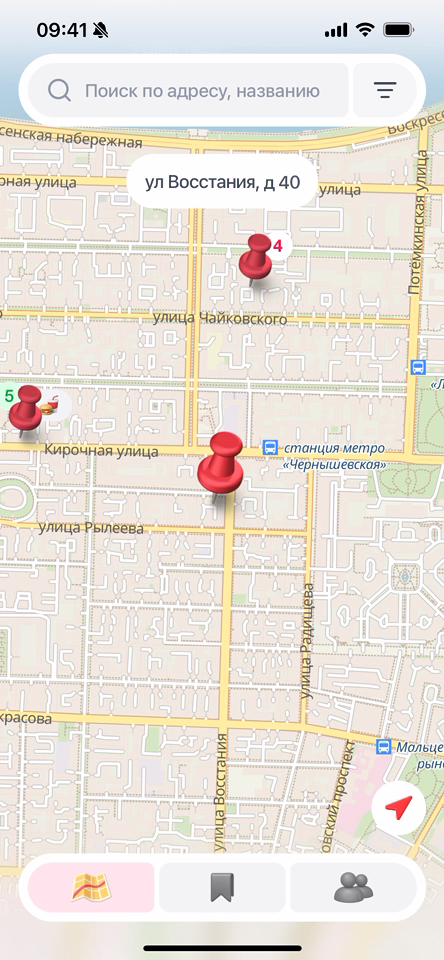
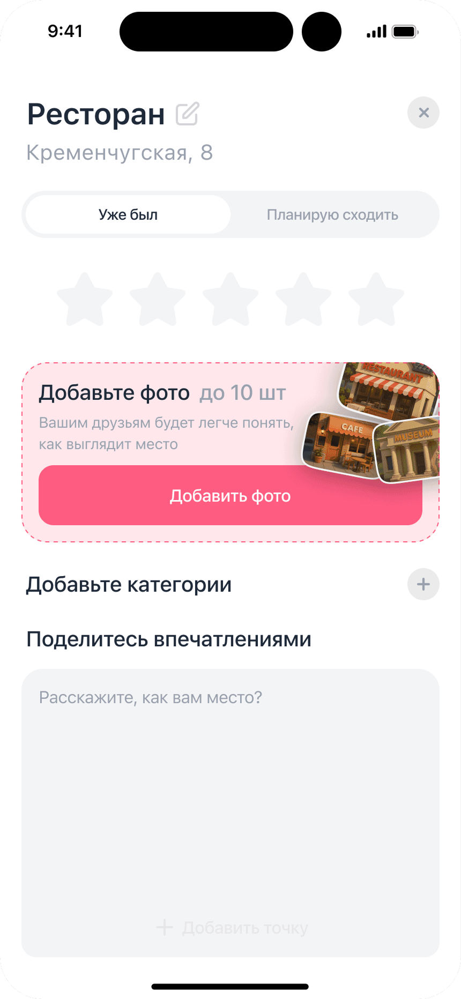
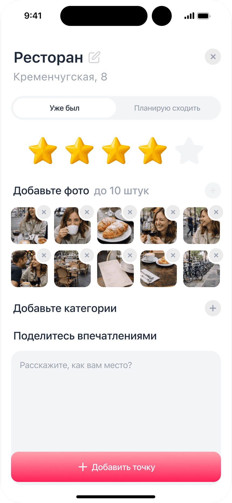
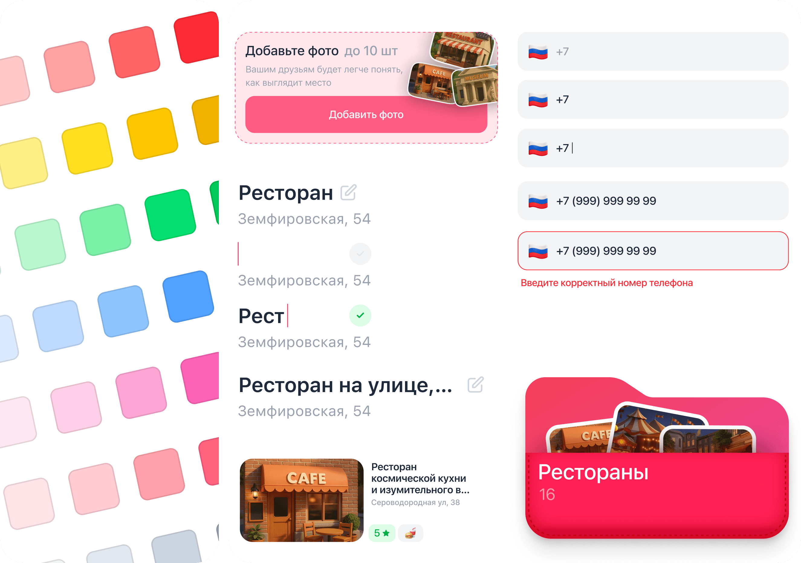

- Переработать онбординг пина — заменить отдельный статичный экран контекстной подсказкой и явно показать следующий шаг
- Интеграция контактной книги — активны только те, кто нашёл друзей в приложении; поиск по номеру снимет барьер
- Геолокационные уведомления — напоминать о местах «Планирую сходить», когда пользователь рядом
- Виджеты быстрого добавления — сохранить место не открывая приложение
Mappy
Посмотреть в продеСервис для сохранения и возврата к интересным местам



Контекст
Идея из личного опыта
Mappy задумывался как продукт, который помогает не просто сохранять места, а возвращаться к своему опыту и решениям, привязанным к реальному пространству.
Проблема
Люди забывают места и теряют информацию о них
Информация о местах разрознена: кто-то фотографирует на ходу, кто-то добавляет в «Сохранённое» в других приложениях, кто-то пишет в заметках. Когда хочется вспомнить или найти что-то новое — приходится искать в интернете, писать друзьям и ждать ответа.
Цель
Сделать сохранение мест привычкой, а не разовым действием
Целевой показатель: WAU пользователей, которые сохраняют ≥1 места в неделю или возвращаются к уже сохранённым. Если люди открывают приложение не только в момент сохранения — значит, продукт работает.
Research
Глубинные интервью и количественные опросы
Провёл 4 глубинных интервью и количественный опрос (57 респондентов), чтобы понять, как люди сохраняют места сейчас и почему почти не возвращаются к ним.
Вопрос · 57 ответов
Сколько вам лет?
24–3040.35%
18–2431.58%
30–4019.3%
16–185.26%
Вопрос
Как часто вы бываете в новых местах?
2–3 раза в месяц77.36%
Раз в неделю13.21%
Несколько раз в неделю9.43%
Вопрос
С чем вы чаще сталкиваетесь?
Забываю точное название места61.22%
Теряю сохранённые ссылки/скриншоты53.06%
Не могу найти место по категории34.69%
Трудно делиться подборками12.24%
Вопрос
Какими сервисами пользуетесь, чтобы сохранять места?
Фото или скриншот экрана58.69%
Спрашиваю друзей в мессенджере43.47%
Заметки (Apple Notes, Notion…)36.95%
Закладки в Google/Yandex Maps34.78%
Вопрос
Насколько вы удовлетворены этими решениями?
Средняя оценка
3.63
1
0%
2
13%
3
32.6%
4
32.6%
5
21.7%
Вопрос
А что в них вас не устраивает?
Трудно сортировать и искать66.66%
Нет напоминаний, когда я рядом33.33%
Не вижу место на карте22.22%
Нельзя добавить заметки/фото11.11%
Вопрос
Как часто вы возвращаетесь к сохранённому списку?
Реже раза в месяц65.91%
Раз в неделю27.27%
Несколько раз в неделю6.82%
Гипотезы
Три гипотезы под текущий этап: рост, удержание, привычка
H1
Если незарегистрированный пользователь видит место по ссылке от друга, он регистрируется — потому что ценность понятна до входа в продукт.
H2
Если в приложении есть места от людей из твоего окружения, ты открываешь его при выборе куда пойти — вместо Google Maps или мессенджера.
H3
Если сохранение места занимает меньше 10 секунд, пользователь делает это регулярно — а не откладывает на потом.
Тестирование
Коридорное тестирование в формате интервью с задачами
После первых экранов провёл две итерации тестирования. Задачи: добавить место где был, добавить место куда планирую, найти места с определённой оценкой.
Итерация 1
В первой итерации название места и адрес были неудобно расположены: пользователям было непонятно, как их менять. Никто не добавил больше четырёх фото; пользователи отметили, что полезно добавить подпись к конкретной фотографии.


Итерация 2
Переработал нейминг: адрес и название — унифицированные текстовые поля. Количество фото сократил до четырёх, добавил возможность подписать конкретную фотографию.
Наведите на экран, чтобы посмотреть анимацию.
Карта
Ключевые сценарии на карте
Короткие демо: работа с картой, фильтрами и поиском.
Наведите на экран, чтобы посмотреть анимацию.
Было: карта и пин, без адреса.
Стало: добавлена пилюля с адресом сверху, чтобы лучше ориентироваться на карте.
Было: пины плотно разбросаны по карте — если в одном месте их много, было тяжело попасть в нужный.
Стало: при увеличении карты пины объединяются в один; для удобства навигации добавил слайдер, чтобы выбрать нужное место.
Было: в поиске были только сохранённые места.
Стало: в поиске можно найти все адреса.
Другие экраны
Сохранённые места и друзья
Сохраняй места, находи друзей и смотри их рекомендации в одном приложении.
Наведите на экран, чтобы посмотреть анимацию.
Было: базовые карточки места, без возможности быстрой редакции.
Стало: карточки с возможностью быстрого действия.
Планы: не все пользователи заметили эту неявную функцию. При первых трёх заходах покажем лёгкое покачивание карточки, чтобы подсказать возможность быстрого редактирования.
Было: простая карточка друзей: в запросах всё находилось в одном месте — и полученные, и отправленные.
Стало: добавил центр уведомлений. В будущем эта система позволит отправлять push-уведомления на телефон: о новых функциях и запросах друзей.
Было: слайдер уходил вместе с именем друга наверх, что мешало удобному поиску и фильтрации у друга.
Стало: при прокрутке карточка друга уезжает наверх, а поиск плавно поднимается до определённой точки и дальше фиксируется.
Дизайн-система
База для цельного и масштабируемого интерфейса

Результаты
Продукт в продакшне, активное ядро пользователей подтвердилось
Провели два раунда тестирования. После второго — скорректировали навигацию и логику карточки места.
20
участников в тесте
7–8
активных каждую неделю
2
раунда тестирования
Что узнал
Продукт работает, когда сходятся мотивация и возможность
Активны те, кто ходит по новым местам и нашёл друзей — без одного из двух человек не возвращается. Онбординг скипают, потому что он вынесен отдельно: следующий шаг — встроить показ функций прямо в интерфейс. Параллельно — ускорить загрузку контента и добавить виджеты быстрого открытия.
Поиск по нику работал — все тестировщики находили друг друга. Но если человека нет в приложении, ты об этом не узнаешь: отсутствие интеграции номеров телефона отрезает часть потенциальных связей ещё до первого открытия.
Планы
Продукт в продакшне, работаем над удержанием